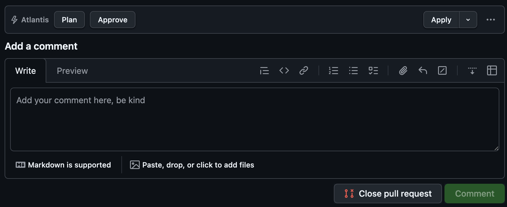

THE SITUATION
Atlantis is driven by typed pull request comments: atlantis plan, atlantis apply, with project flags that must be exactly right. Power users type them from muscle memory; everyone else copies them from somewhere, gets a flag wrong, and waits for the bot to complain. During large migrations — dozens of pull requests a day — the typing itself became measurable friction.
The obvious fixes were all worse: a web service with GitHub tokens to manage, or yet another bot with write access.
WHAT I DID
I built a small browser extension that injects the commands as buttons directly into the GitHub pull request page.

One click writes and submits the comment — as the logged-in user, through the same comment box they would have typed into. That one design decision is the whole security story: there are no tokens, no server, no new identity, and nothing new to secure — GitHub sees an ordinary comment from an ordinary user with their ordinary permissions.
The extension only activates on the right repositories, checks team membership before showing itself, and the dangerous button is two-stage: apply must be armed before it fires, so nobody fat-fingers an apply while scrolling.
WHAT IT CHANGED
Infrastructure pull request interactions became one-click and typo-free while preserving the logged-in user's existing permissions and audit trail.
Here it is in action: